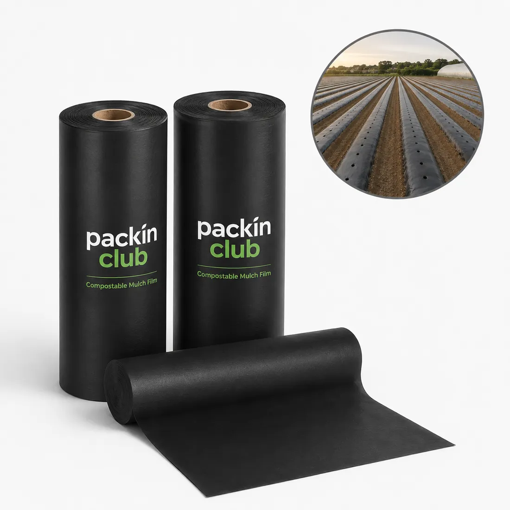
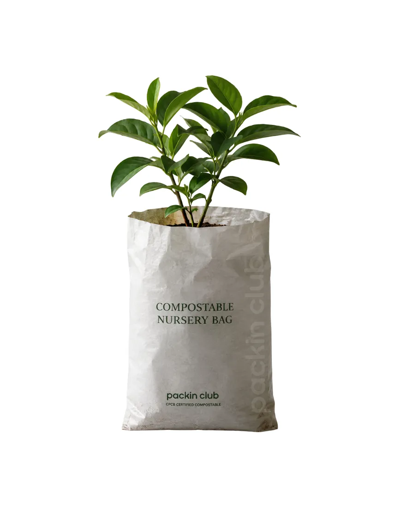

Biodegradable mulch film and compostable nursery bags for farms, nurseries and polyhouses. IS 17088 and CPCB certified, made to order in bulk and supplied from Delhi across India.
Get a quote →Plastic mulch is cheap to lay and expensive to remove. Packin Club’s compostable agri mulch film does the same jobs as conventional plastic mulch, suppressing weeds, holding soil moisture and steadying root-zone temperature, and then tills back into the soil at harvest, so there is nothing to lift, collect or send to landfill.
We are a Delhi-based manufacturer and supplier of biodegradable mulch film and compostable nursery bags for plants. Films are made to your bed width and crop cycle, and nursery bags come in sizes for seedlings and saplings.

Suppresses weeds and holds soil moisture, then tills back into the earth, no retrieval, no residue.

Grow-bags that go straight into the ground at transplant, roots and all.
Vegetable and row-crop farmers, strawberry and melon growers, polyhouse operators, orchards, plant nurseries and agri-input companies that want a mulch film and plant bag which no longer leaves microplastic in the field.
Match film thickness and field life to your crop cycle (3 to 6 months is typical for vegetables), and tell us the bed width and roll length your layer machine needs. For nursery bags, choose the size by plant height and root ball, and ask for a sample batch before a full season order.
Every Packin Club product is made to IS 17088, is CPCB certified, and returns to soil within 240 days under industrial composting conditions. We make to order with a minimum of 100 kg per specification, and ship from Delhi to Delhi NCR, Noida, Gurugram, Ludhiana, Mumbai, Pune, Chennai and Coimbatore and other cities.
Compostable mulch film is a certified type of biodegradable film. It is tested to a standard such as IS 17088, so its breakdown is measured rather than just claimed. Ask for the certificate before you buy any biodegradable mulch film.
It is designed to be tilled into the soil at harvest, where it breaks down. Field life and breakdown time depend on thickness, soil temperature and moisture, so share your crop and region and we will recommend a grade.
Yes. Compostable nursery bags are supplied in bulk with a minimum order of 100 kg per specification. Request a sample first to check size and strength with your plants.
Yes. We ship from Delhi to farms and distributors in Delhi NCR, Noida, Gurugram, Ludhiana, Mumbai, Pune, Chennai and Coimbatore and other parts of India.
We'll send samples of this format to trial on your packing line, and quote to your sizes and volumes within two business days.
Request samples & quote →